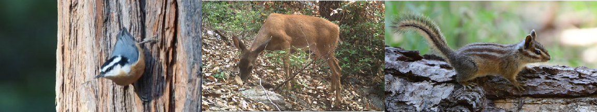

Biodiversity
Why care about biodiversity?

Biodiversity is the variety of life, in all forms. This encompasses all different species (from viruses, microbes, and fungi to plants and animals) and ecosystems (communities and interactions between species) in the world.
Biodiversity is in crisis, therefore it is important to have integrative tools that better equip us to evaluate and support healthy, resilient, biodiverse communities as we plan major interventions to enhance forest resilience.
How to measure biodiversity
Biologists perform biodiversity inventories focused on species. Species metrics have long formed the basis of conservation and management research and policy.
Species: A fundamental unit of biodiversity, though often hard to precisely define, species can be thought of as the largest natural group that share a common gene-pool.
Species richness: The count of the total number of different species in a given area.
Species diversity: Diversity measures summarize both richness and distribution of numbers for each species in a community (known as their relative abundance).
Wildlife diversity

Sierra Nevada forests are home to charismatic species, including mountain lions, fishers, martins, spotted owls, goshawks, and dark-eyed juncos. Forests that include many of these species and a variety of other species are recognized as healthy and biodiverse. But are they resilient?
Biodiversity is more than species diversity, it encompasses different levels of living diversity from variation between individuals, to differences between species, to the differences that distinguish the structure and function of entire ecological communities and ecosystems.
Our work utilizes both classic biodiversity data (e.g. a list of species for a given locality, and if available their relative abundance) as well as information on the role, job or function they perform in that location to move beyond classic metrics. Using these data we are constructing novel measures to characterize the functions of diverse species in their communities. For more see food webs.